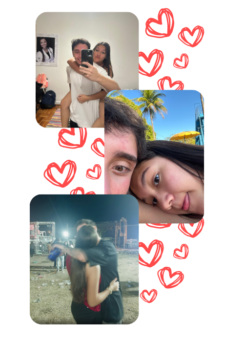

Te Encontrei!
Entre tantas pessoas, te encontrei. E desde então, tudo ficou mais leve, mais bonito, mais certo. Esse cantinho é só pra lembrar que o amor que eu sinto por você cresce um pouquinho mais a cada dia.

Entre tantas pessoas, te encontrei. E desde então, tudo ficou mais leve, mais bonito, mais certo. Esse cantinho é só pra lembrar que o amor que eu sinto por você cresce um pouquinho mais a cada dia.
Às vezes posso não demonstrar o quanto te amo e acabo te deixando em dúvida, meu amor… Mas quero que saiba que te amo com toda a minha alma. Você é a mulher dos meus sonhos e a pessoa que eu mais amo neste mundo.
Saudade é o que sinto mesmo quando fico apenas um minuto longe de você, meu amor. Vivo de saudade, mas não veja isso como algo ruim — é a prova de que fazemos bem um ao outro. Você é o motivo da minha felicidade, e é por isso que sinto tanta saudade.
Amor, talvez eu não esteja fisicamente presente, mas quero que saiba que, de alguma forma, estou sempre com você. Você nunca está sozinha, meu amor. Deus e eu te acompanhamos, te apoiamos e te amamos — hoje e sempre.
Amor, talvez você não seja amada por todos, mas quero que saiba, com toda certeza, que eu te amo — e te amo muito. Então, nunca se esqueça: VOCÊ É AMADA!
Amor, eu sei que existem momentos na vida em que a gente se sente insuficiente… Mas, por favor, nunca se esqueça: você é forte, é incrível, é gentil, e tem um coração lindo. O que eu quero dizer é que você não é apenas suficiente — você é mais do que suficiente. Eu te amo!
Amor, sempre que você quiser rir e eu não estiver por perto, lembre das nossas bobeiras e zoeiras. Lembre de nós zoando o menino que conversava com a Alicia por exemplo, lembre de todas as nossas risadas juntos… só a gente mesmo, né? Kkk Eu te amo!
Amor, eu sei que existem dias em que acordamos e tudo parece cinza e vazio… Mas sempre que isso acontecer, lembre-se: eu estou aqui para ser o seu arco-íris (lá ele, né? kkk). No sentido de que, depois de toda tempestade, o arco-íris vem colorir o que era cinza. Eu te amo!
Amor, quando sentir saudade das nossas besteiras, lembre que somos loucos e que nós combinamos perfeitamente. Lembre de todos os momentos bons que vivemos, das nossas ligações, e até dos nossos sonos pesados (ignora o fato de que eu ronco, amor kkkkk). Eu te amo!
Amor, eu sei que você está brava comigo… Me desculpa, de verdade, pelo que eu fiz. Pode ter certeza que isso já está na minha lista de mudanças — e essa lista existe porque eu te amo. Eu quero ser o homem da sua vida, aquele que te faz bem e te faz sorrir. Eu te amo, meu amor.
Eu sei que o que você mais gosta é de me zoar, né amor? Mas já aviso: se me zoar, não vou ter pena — vou rir das suas brincadeiras, mas tudo que vai, volta viu? Kkkk Eu te amo!
Amor, eu sei que tem dias em que a tristeza aparece, e tudo parece mais pesado… Mas tenta compartilhar essa tristeza comigo, tá? Quero ser seu companheiro na alegria e também na tristeza. Se permita ser cuidada e ajudada por mim, meu amor. Eu te amo!
Amor, eu sei que o mundo pode parecer pesado às vezes… Mas quero que saiba que estou aqui pra te ajudar a levantar esse peso e jogá-lo bem longe. Imagina uma pedra enorme tampando a vista do céu — sozinha, você talvez não consiga tirá-la, mas juntos, nós conseguimos. Assim, no fim, poderemos ver esse céu lindo de novo. Tentei explicar, amor kkkk. Eu te amo!
Amor, sempre que pensar em desistir de algo, lembre-se do que vou te dizer: você é capaz de tudo o que quiser. Você é uma mulher incrível, forte e cheia de luz. E nunca se esqueça — existem pessoas que acreditam em você e te apoiam… eu sou uma delas. Eu te amo!
Chegou essa tal de TPM, né amor — vontade de matar ela kkk. Eu sei que o humor pode estar uma loucura, mas saiba que estou aqui para te amar, te confortar, te abraçar e te acalmar. Nesse período também está totalmente permitido um chocolatezinho — só não esquece de tomar seu remédio, tá? Eu te amo!
Amor, se em algum momento você sentir vontade de chorar, me liga. Eu quero ser o seu colo confortável, aquele lugar onde você pode desabar sem medo, onde não existe julgamento, só abraço e carinho. Eu te amo muito!
Amor, se você não está se sentindo bonita, é loucura, viu? Porque você é linda, perfeita, maravilhosa, incrível, magnífica… me faltam adjetivos, amor kkk. Eu te amo muito, minha linda princesa!
Amor, se um dia você tiver dúvida se é forte ou não, lembra disso: você é forte, guerreira e corajosa. E olha que nem tô falando dos seus tapas quando eu te estresso kkkk. Eu te amo muito!
Amor, preciso mesmo te lembrar que você é incrível? Você é quem acalma o meu dia, quem diverte o meu dia, quem me faz sentir amado… Isso já basta para provar que você é incrível, né? Eu te amo muito, ferinha!!
Amor, por que você está se comparando? Você é incomparável, única — ninguém é como você. Se eu tivesse mil vidas, te escolheria nas mil. Eu te amo muito!
Amor, se você estiver indo dormir e eu não estiver por perto pra te dizer isso, então deixo a nossa frase kkk: Boa noite, amor. Dorme com Deus e sonha comigo. Eu te amo muito, muito, muito!!
Bom dia, amor! Que o seu dia seja repleto de coisas boas (tipo eu). Vamos seguir juntos, superando todas as dificuldades da vida, lado a lado. Eu te amo muito!!
Amor, quando sentir falta do meu abraço, me liga… Assim eu posso te abraçar do meu jeitinho e amenizar essa saudade. Eu sinto falta do seu abraço todos os dias, mas, de alguma forma, você me abraça todos os dias — mesmo de longe. Eu te amo muito!
Amor, como você mesma me disse outro dia: eu não te amo… eu te vivo! Você é a mulher com quem eu quero compartilhar a minha vida, cada dia, cada momento, cada sonho. Eu te vivo, amor!
Amor, se deu tudo certo, eu fico imensamente feliz por você! Eu te amo muito e sempre quero te ver sorrindo, conquistando tudo o que sonha. E se for preciso, estarei aqui pra te ajudar em qualquer coisa, sempre. Eu te amo muito, meu amor!
Amor, se por algum motivo as coisas estiverem dando errado, lembre do que você mesma me disse: se fosse um sentimento, seria a esperança. Então, amor, tenha esperança — assim como eu tenho em você. Acredite, tudo vai dar certo. Eu te amo muito!
Amor, sempre que achar que me ama mais do que devia, lembre-se: a vida é curta demais pra gente se amar pouco. Então eu te digo com toda certeza — eu sou babão, sou intenso e sou emocionado, pelo simples fato de que eu te amo!
Nossa história começou com um simples olhar apaixonado, amor. Foi Deus quem a construiu, no momento certo, e nossa conexão aconteceu de forma inesperada. É isso que nos faz nos identificar e nos completar um ao outro sempre. Eu te amo muito!
Amor, sempre que estiver imaginando nosso futuro, lembre-se das coisas boas. Imagine nossa casinha arrumadinha, nossos filhos correndo pelo quintal, nosso cachorro fazendo bagunça e a gente rindo de tudo na vida… É assim que eu sempre imagino a gente kkkk. Eu te amo!
Essa música sempre me faz pensar em você 💘